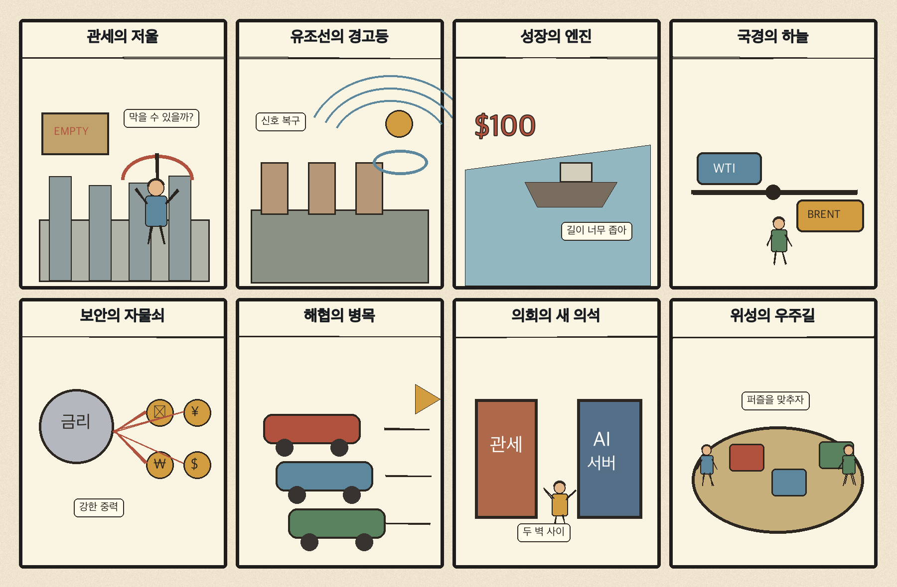
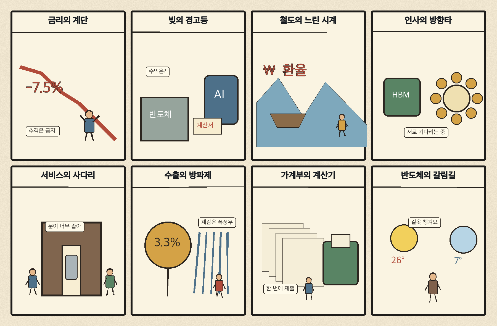

01
오라클 · 109.50→103.88달러 · -5.13%
내용요약 AI 인프라 투자비와 수익성 우려 속 전일 종가 대비 5.13% 하락했습니다.
예상여파 데이터센터 투자 부담이 부각되면 국내 전력·장비 공급망도 단기 변동성이 커질 수 있습니다.
MORNING_BRIEFING_20261126
작성 시각: 2026-11-26 06:36 KST · 직전 미국 정규장과 2026-11-26 KST 당일 공개 기사 기준
직전 미국 정규장인 11월 25일 뉴욕증시는 다우 +0.33%, S&P 500 -0.25%, 나스닥 -0.62%로 혼조 마감했습니다. 장중 기술주 투매를 상당 부분 되돌렸지만 엔비디아 -3.91%, 마이크론 -4.53%, 오라클 -5.13%로 AI 투자 불안은 이어졌습니다. 전날 KOSPI가 -6.16% 급락한 만큼 오늘은 추가 투매보다 낙폭 축소 여부를 보되, 금통위와 미국 관세·유가 변수를 함께 확인해야 합니다.
| 지수 | 종가 | 등락률 | 한국 증시 시사점 |
|---|---|---|---|
| 다우존스 | 50,182.95 | +0.33% | 경기민감주 지지 |
| S&P 500 | 7,182.78 | -0.25% | 대형주 약보합 |
| 나스닥 종합 | 23,585.80 | -0.62% | AI 투자 불안 지속 |
장중 급락을 줄였지만 AI 투자 불안은 남았습니다.
전날 4,697.51로 밀려 변동성 관리가 최우선입니다.
기준금리 인상 전망과 성장률 조정을 확인합니다.
중동 공급위험이 운송·화학 원가를 압박합니다.
11월 25일 보고서는 AI 반도체 변동성과 국내 지수 급등 직후 불확실성 때문에 공식 추천을 내지 않았습니다. 사후 급등 종목을 추천 기록에 추가하지 않습니다.
| 시장 | 종가 | 등락률 | 기준 |
|---|---|---|---|
| KOSPI | 4,697.51 | -6.16% | 11월 25일 · 시가 대비 -2.32% |
| KOSDAQ | 650.64 | -2.29% | 11월 25일 · 시가 대비 -0.55% |
| 다우존스 | 50,182.95 | +0.33% | 미국 11월 25일 정규장 |
| S&P 500 | 7,182.78 | -0.25% | 미국 11월 25일 정규장 |
| 나스닥 종합 | 23,585.80 | -0.62% | 미국 11월 25일 정규장 |
액센츄어 +3.52%, 메타 +3.40%, 스포티파이 +2.79%였습니다.
다이아몬드백 +2.30%, 홈디포 +2.14%, 프리포트맥모란 +1.72%였습니다.
오라클 -5.13%, 마이크론 -4.53%, 엔비디아 -3.91%였습니다.
아마존 -3.12%, ASML -2.47%, 알파벳 -2.13%였습니다.
내용요약 AI 인프라 투자비와 수익성 우려 속 전일 종가 대비 5.13% 하락했습니다.
예상여파 데이터센터 투자 부담이 부각되면 국내 전력·장비 공급망도 단기 변동성이 커질 수 있습니다.
내용요약 메모리 업황 기대보다 AI 투자 불안이 앞서며 전일 종가 대비 4.53% 하락했습니다.
예상여파 국내 메모리 대형주의 투자심리와 외국인 수급에 부담이 될 수 있습니다.
내용요약 신용등급 검토 보도와 AI 투자 경계 속 전일 종가 대비 3.91% 하락했습니다.
예상여파 HBM·첨단 패키징 공급망의 시가 변동성을 높이는 신호입니다.
내용요약 장중 기술주 반등을 주도하며 전일 종가 대비 3.40% 상승했습니다.
예상여파 플랫폼 광고와 AI 서비스 투자의 상대적 회복력을 보여줍니다.
내용요약 기업 IT서비스 수요 기대 속 전일 종가 대비 3.52% 상승했습니다.
예상여파 AI칩보다 실제 기업 도입·컨설팅 수요가 견조할 가능성을 시사합니다.
전날 KOSPI -6.16% 급락 뒤 미국 기술주가 장중 낙폭을 축소한 점은 추가 투매를 완화할 수 있습니다. 그러나 엔비디아·마이크론 약세, 기준금리 인상 전망, 유가 급등이 동시에 부담입니다. 반도체의 시가 반등만 보고 추격하지 말고 KOSPI 4,670선 방어, 외국인 현·선물 수급, 금통위 발표 뒤 원화와 은행·성장주의 상대강도를 확인해야 합니다.
오늘은 추천 없음 — 현금 관망
전날 KOSPI가 6.16% 급락했고 오늘 금통위·미국 관세 후속 반응·중동 유가가 겹칩니다. 시가와 실시간 수급을 확인하기 전에는 종합점수 75점·상승확률 60%·예상 손익비 1.5와 30건 이상 보정 표본을 동시에 검증할 수 없습니다.
관심 연결종목 은행, 정유, 대형 반도체는 금리·유가·미국 기술주 흐름의 관찰 대상일 뿐 매수 추천이 아닙니다. 급락 뒤 시가 반등 추격과 무계획한 물타기를 금지합니다.
기준금리 3.25% 인상 여부와 성장·물가 전망을 봅니다.
전날 저점 4,672.55 부근의 방어 여부를 확인합니다.
한국 15% 상한과 반도체·자동차 재검토 조건을 점검합니다.
에너지 원가와 국내 이동·물류 지연을 함께 살핍니다.
핵심 요약: AI 투자비 부담으로 반도체·데이터센터 관련주는 흔들렸지만, 자율형 에이전트와 피지컬 AI의 실제 산업 도입은 빨라지고 있습니다. 우주 데이터센터, 지배구조 위험, 국내 조직개편까지 기술 경쟁의 범위가 넓어졌습니다.
내용요약 전화·상담·계약을 사람 대신 수행하는 자율형 AI가 확산하면서 권한과 책임의 경계를 다룬 기사입니다.
예상여파 기업은 자동화 효율뿐 아니라 승인 절차, 기록 보존, 오작동 배상 기준을 함께 설계해야 합니다.
내용요약 에이전틱 AI와 피지컬 AI의 산업현장 활용을 위한 표준화 논의가 본격화됐습니다.
예상여파 국내 로봇·제조 AI 기업에는 상호운용성 확보와 안전 인증 대응이 수주 경쟁력의 핵심이 됩니다.
내용요약 미국 FCC가 우주 데이터센터 구상을 위한 대규모 위성 배치 계획을 승인했습니다.
예상여파 AI 연산 인프라의 전력·냉각 한계를 우주로 확장하려는 시도가 위성통신·발사체 투자 경쟁을 키울 수 있습니다.
내용요약 S&P가 엔비디아의 경영·지배구조 평가 악화를 이유로 신용등급 강등 검토에 들어갔습니다.
예상여파 AI칩 수요와 별개로 지배구조 위험이 밸류에이션과 자금조달 비용에 반영될 가능성을 지켜봐야 합니다.
내용요약 삼성 전자 계열사가 조직개편에서 로봇·AI 등 미래사업 조직을 강화할 가능성이 제기됐습니다.
예상여파 국내 로봇·AI 생태계의 투자와 협업 확대 기대가 생기지만 실제 인사·예산 배분을 확인해야 합니다.
핵심 요약: 미국의 과잉생산 관세에서 한국은 15% 상한을 지켰지만 재검토 위험이 남았습니다. 미국 성장률은 강했고, 중동 유가·동유럽 안보·금융당국 해킹이 에너지와 보안 비용을 밀어 올리고 있습니다.
내용요약 미국이 중국 등 14개 경제주체에 과잉생산 관세를 발표했고 한국에는 기존 15% 상한을 유지했습니다.
예상여파 즉각적인 관세 충격은 피했지만 반도체·자동차를 겨냥한 재검토 가능성이 남아 대미 수출 불확실성은 지속됩니다.
내용요약 후티의 사우디 정유시설 공격 여파로 브렌트유가 3.5% 급등했습니다.
예상여파 에너지·운송비 상승은 항공·화학·소비재 원가를 압박하고 에너지 생산기업에는 단기 우호적일 수 있습니다.
내용요약 미국 3분기 성장률이 연율 4.3%로 3년 만의 최고를 기록했습니다.
예상여파 경기 연착륙 기대를 높이는 동시에 물가·금리 경로가 더 오래 높은 수준에 머물 가능성을 키웁니다.
내용요약 폴란드가 러시아의 도발에 대응해 우크라이나 접경에 비행금지구역을 설정했습니다.
예상여파 동유럽 안보 긴장이 높아지며 항공 운항과 방산·물류 비용의 불확실성이 커질 수 있습니다.
내용요약 미국 금융범죄 단속기관이 해킹을 받아 일부 시스템 가동을 중단했습니다.
예상여파 금융당국의 사이버 보안 취약성이 드러나 규제기관과 금융사의 인증·망분리 투자가 강화될 수 있습니다.

핵심 요약: 오늘 금통위의 금리 인상 가능성이 금융시장 핵심 변수입니다. 가계·자영업자 부실채권은 늘었고 철도 준법투쟁, 대기업 인사, 서비스업 일자리 미스매치가 이동·경영·고용의 부담을 보여줍니다.
내용요약 한국은행이 올해 마지막 금통위에서 기준금리를 3.25%로 인상하고 성장 전망을 높일 것이라는 관측입니다.
예상여파 금리 인상 시 은행 순이자마진에는 우호적일 수 있지만 가계·자영업자 이자 부담과 성장주 할인율은 높아집니다.
내용요약 9월 개인사업자와 가계 신용대출의 부실채권 비율이 12년 만에 최고로 집계됐습니다.
예상여파 취약 차주의 연체 부담이 커지면 금융사의 충당금과 내수 소비 회복에 부담으로 작용할 수 있습니다.
내용요약 철도노조가 오전 9시부터 안전운행 투쟁에 들어가 일부 KTX와 전철 지연이 예상됩니다.
예상여파 출퇴근·출장 이동과 물류 일정에 차질이 생길 수 있어 대체 교통수단과 여유 시간을 확보해야 합니다.
내용요약 현대차그룹이 이르면 오늘 사장단 인사를 단행하며 불확실한 경영환경에서 안정에 무게를 둘 전망입니다.
예상여파 핵심 보직의 연속성이 유지되면 전략 실행은 안정되지만 미래차·로봇 투자 조직의 변화도 확인해야 합니다.
내용요약 국민 84%가 서비스산업의 중요성을 인정했지만 취업 선호도는 제조업보다 낮다는 조사입니다.
예상여파 생산성·임금·경력경로를 개선하지 않으면 서비스업 인력 부족과 청년 일자리 미스매치가 이어질 수 있습니다.
